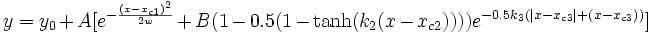

Contents |

Chesler-Cram peak function for use in chromatography.
Number: 9
Names: y0, xc1, A, w, k2, xc2, B, k3, xc3
Meanings: y0 = offset, xc1 = center, A = amplitude, w = half width, k2 = unknown, xc2 = center, B = amplitude, k3=unkown, xc3=center.
Lower Bounds: w > 0.0
Upper Bounds: none
cce(x,y0,xc1,A,w,k2,xc2,B,k3,xc3)
FITFUNC\CHESLECR.FDF
Peak Functions, PFW, Chromatography